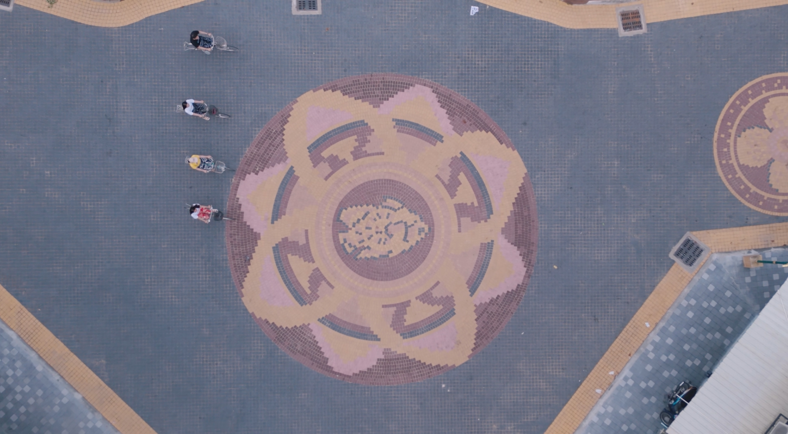
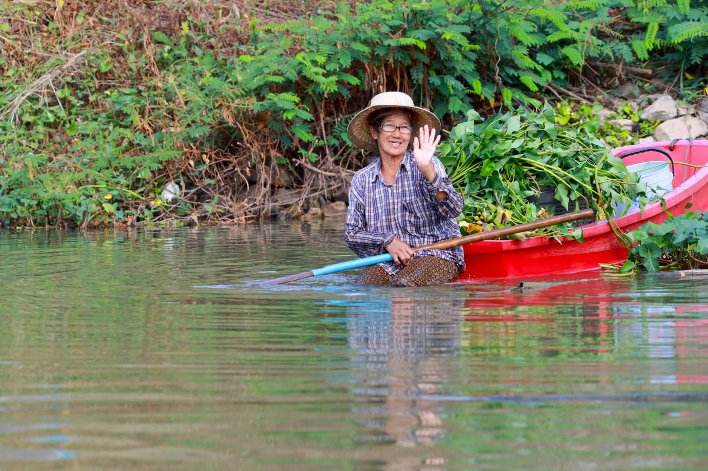
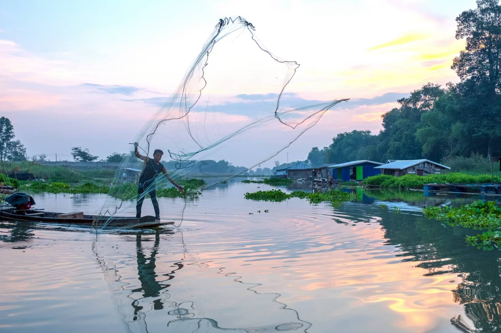

ยุทธศาสตร์การปรับตัวและความยืดหยุ่นของเมือง
อุทัยธานีเผชิญความเสี่ยงจากอุทกภัย (High Flood Risk) เนื่องจากเป็นพื้นที่ลุ่มน้ำ ยุทธศาสตร์หลักจึงเน้นการ "อยู่ร่วมกับน้ำ" (Living with Water) แทนการต่อต้านโครงสร้างทางธรรมชาติ
รักษาภูมิปัญญาเรือนแพลูกบวบที่ปรับระดับตามน้ำได้ 100% เชื่อมโยงวิถีชีวิตกับน้ำ
ส่งเสริมการท่องเที่ยวด้วยจักรยานและเดินเท้า (Slow Tourism) ทั่วเขตเมืองเก่า

การติดตามระดับน้ำและการไหลเวียนของแม่น้ำสะแกกรังอย่างใกล้ชิดเพื่อเตรียมพร้อมรับมือภัยธรรมชาติ

กิจกรรมส่งเสริมพื้นที่สีเขียวและการท่องเที่ยวที่เป็นมิตรกับสิ่งแวดล้อมในชุมชนเมืองเก่า